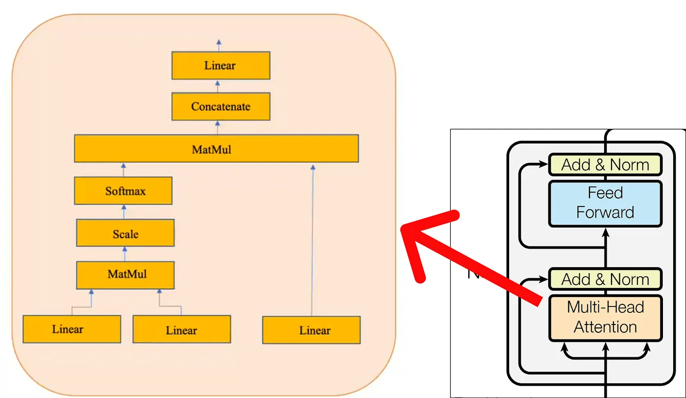
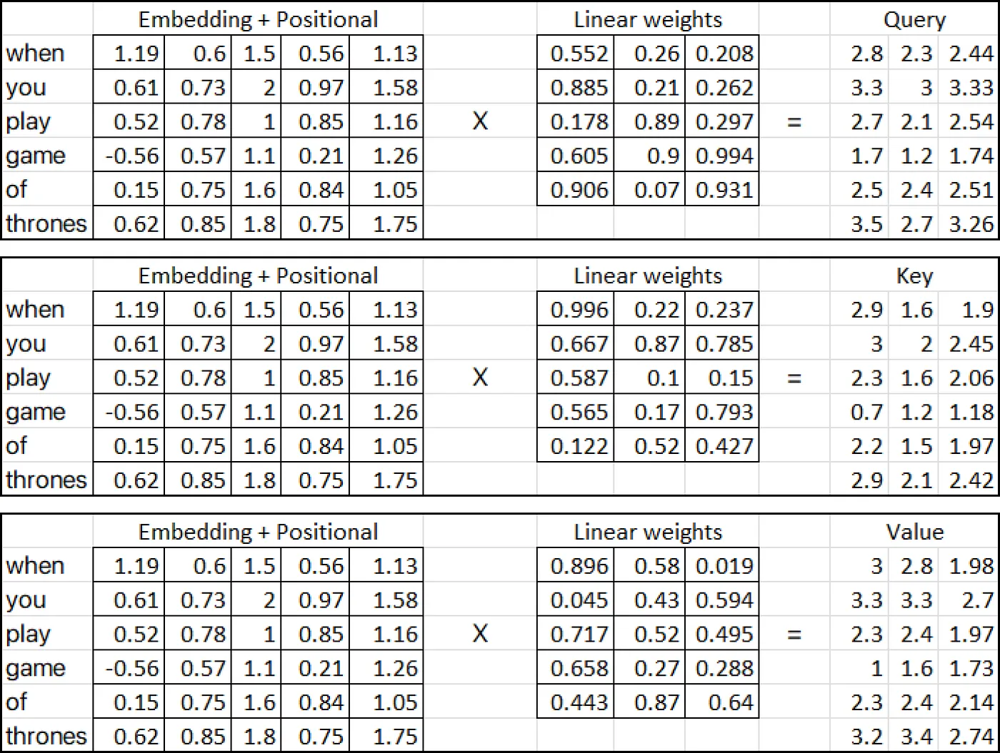

Understanding Transformers: A Step-by-Step Math Example — Part 1
I understand that the transformer architecture may seem scary, and you might have encountered various explanations on YouTube or in blogs. However, in my blog, I will make an effort to clarify it by providing a comprehensive numerical example. By doing so, I hope to simplify the understanding of the transformer architecture.
Shoutout to HeduAI for providing clear explanations that have helped clarify my own concepts!
This blog is incomplete, here is the complete version of it:
Let's get Started!
...
Inputs and Positional Encoding
Let’s solve the initial part where we will determine our inputs and calculate positional encoding for them.
Step 1 (Defining the data)
The initial step is to define our dataset (corpus).
In our dataset, there are 3 sentences (dialogues) taken from the Game of Thrones TV show. Although this dataset may seem small, its size actually helps us in finding the results using the upcoming mathematical equations.
Step 2 (Finding the Vocab Size)
To determine the vocabulary size, we need to identify the total number of unique words in our dataset. This is crucial for encoding (i.e., converting the data into numbers).
where N is a list of all words, and each word is a single token, We will break our dataset into a list of tokens, i.e., finding N.
After obtaining the list of tokens, denoted as N, we can apply a formula to calculate the vocabulary size.
using a set operation helps remove duplicates, and then we can count the unique words to determine the vocabulary size. Therefore, the vocabulary size is 23, as there are 23 unique words in the given list.
Step 3 (Encoding and Embedding)
We well assign an integer to each unique word of our dataset.
After encoding our entire dataset, it’s time to select our input. We will choose a sentence from our corpus to start with:
"When you play game of thrones"
Each word passed as input will be represented as an encoded integer, and each corresponding integer value will have an associated embedding attached to it.
- These embedding can be find using Google Word2vec (vector representation of word). In our numerical example we will suppose embedding vector for each word filled with random values between (0 and 1).
- Moreover, the original paper use 512 dimension of embedding vector, we will consider a very small dimension i.e., 5 for numerical example.
Each word embedding is now represented by an embedding vector of dimension 5, and the values are filled with random numbers using the Excel function RAND().
Step 4 (Positional Embedding)
Let’s consider the first word, i.e., “When” and calculate the positional embedding vector for it.
There are two formulas for positional embedding:
The POS value for the first word, “When” will be zero since it corresponds to the starting index of the sequence. Additionally, the value of i, whether it is even or odd, determines which formula to use for calculating the PE values. The dimension value represents the dimensionality of the embedding vectors, and in this case, it is 5.
Continuing the calculation of positional embeddings, we will assign a pos value of 1 for the next word, “you” and continue incrementing the pos value for each subsequent word in the sequence.
After finding the positional embedding, we can concatenate it with the original word embedding.

The resultant vector we obtain is the sum of e1+p1, e2+p2, e3+p3, and so on.
The output of the initial part of our transformer architecture serves as the input to the encoder.
...
Encoder
In the encoder, we perform complex operations involving matrices of queries, keys, and values. These operations are crucial for transforming the input data and extracting meaningful representations.
Inside the multi-head attention mechanism, a single attention layer consists of several key components. These components include:

Please note that the yellow box represents a single attention mechanism. What makes it multi-head attention is the presence of multiple yellow boxes. For the purposes of this numerical example, we will consider only one (i.e., single-head attention) as depicted in the above diagram.
Step 1 (Performing Single Head Attention)
There are three inputs in attention layer:
In the diagram provided above, the three input matrices (pink matrices) represent the transposed output obtained from the previous step of adding the position embeddings to the word embedding matrix.
On the other hand, the linear weights matrices (yellow, blue and red) represent the weight used in the attention mechanism. These matrices can have any number of dimensions with respect to columns, but the number of rows must be the same as the number of columns in the input matrices for multiplication.
In our case, we will assume that the linear matrices (yellow, blue, and red) contain random weights. These weights are typically initialized randomly and then adjusted during the training process through techniques like backpropagation and gradient descent.
So let’s calculate (Query, Key and Value metrices):

Once we have the query, key, and value matrices in the attention mechanism, we proceed with additional matrix multiplications.
Now we multiply the resultant matrix with value matrix that we computed earlier:
If we have multiple head attentions, each yielding a matrix of dimension (6x3), the next step involves concatenating these matrices together.
In the next step, we will once again perform a linear transformation similar to the process used to obtain the query, key, and value matrices. This linear transformation is applied to the concatenated matrix obtained from the multiple head attentions.
As the blog is already becoming lengthy, in the next part, we will shift our focus to discussing the steps involved in the encoder architecture.
If you have any query feel free to ask me!